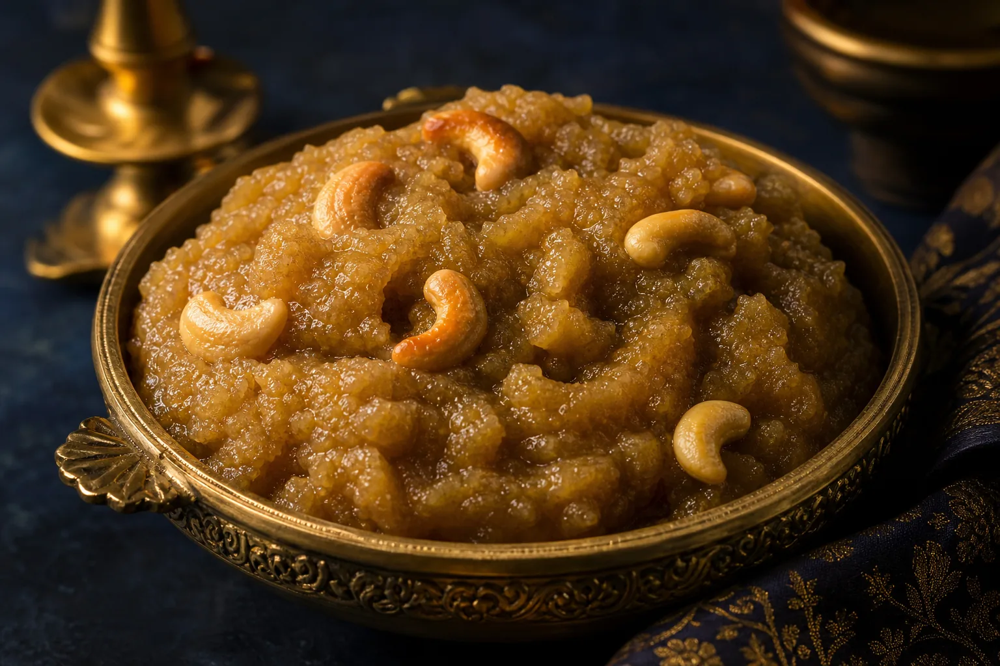

Small Function Catering Services in Chennai: Menus & Planning Guide
Plan catering for birthdays, housewarmings, engagements and intimate family events with practical guest-count, menu, service and quotation advice.
Read the small-function guideExpert wedding catering guidance, Chennai menu inspiration and practical planning advice from the Baruch Caterers team.
Plan catering for birthdays, housewarmings, engagements and intimate family events with practical guest-count, menu, service and quotation advice.
Read the small-function guide
Learn how to compare vegetarian caterers, build traditional and modern menus, accommodate dietary preferences and request a clear wedding quotation.
Read the vegetarian wedding guide
A complete guide to comparing caterers, planning Veg and Non-Veg menus, understanding quotations, managing guest counts and avoiding common booking mistakes.
Read the complete guide
Discover the soft, ghee-rich bread halwa shown in our Tamil food video, plus serving ideas, catering quantities and menu pairing tips.
Read the bread halwa guideThis journal is designed to grow with new menu, planning and hospitality articles.
Breakfast, banana-leaf lunch, sweets and reception combinations.
Editorial roadmapGuest count, service style, ingredients, staffing and quotation essentials.
Editorial roadmapBalanced starters, biryani, gravies, breads and accompaniments.
Editorial roadmapSend us the wedding menu or planning topic you want our team to explain next.